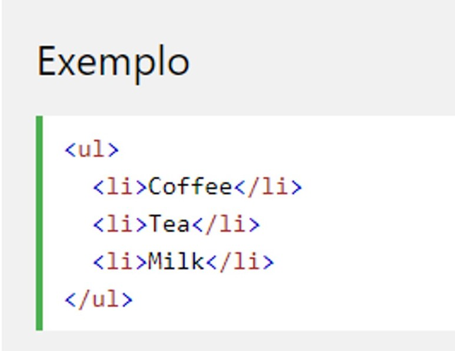

LISTA NÂO ORDENADA
Uma lista não ordenada começa com a tag ul>. Cada item da lista começa com a tag li>.
Os itens da lista serão marcados com marcadores (pequenos círculos pretos) por padrão:
Uma lista não ordenada começa com a tag ul>. Cada item da lista começa com a tag li>.
Os itens da lista serão marcados com marcadores (pequenos círculos pretos) por padrão:
